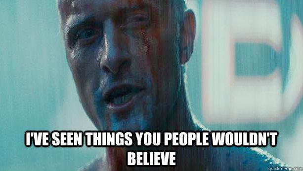
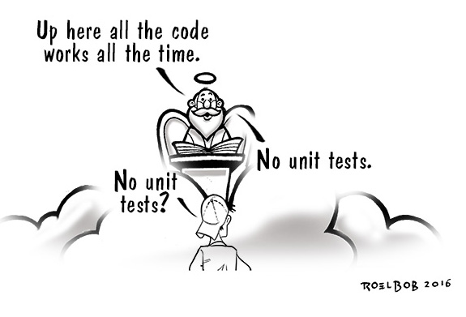
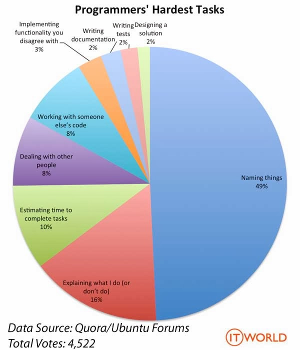
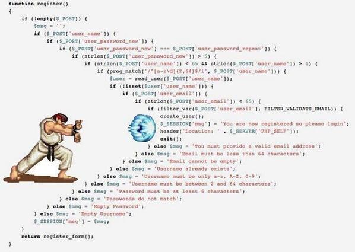
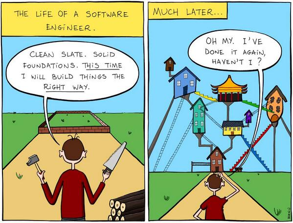
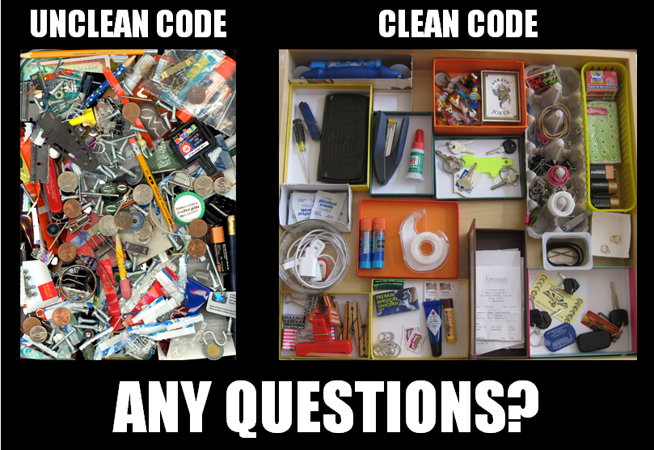

“
Any fool can write code that a computer can understand. Good programmers write code
that humans can understand
”
Martin Fowler
“
Programming is the art of telling another human what one wants the computer to do
”
Donald Knuth

Get back to beginnings
Good code matters
Presented by Milan Popović / @komita1981
Me
PHP developer
Work for Navus Consulting
I like to learn and share knowledge
Active member of PHP Srbija
Laravel Belgrade meetup co-organizer
What is code?
Code is programming statement
A sequence of stored instructions
Language in which we express the requirements
A piece of creative art
Represent your understanding of requirements
“
There are only two types of code, code that delivers business value, and code that doesn't
”
Anthony Ferrara
External Quality
How well the system meets needs of users and customers
It’s not about coding
It’s not about design
It’s not about joy
It doesn't matter how well you build the wrong thing
It’s all about value
Value = All other things included!
“
When your coding skills will be smooth, you will start thinking about the value automatically
”
Alexey (Mr_Mig) Migutsky
Internal Quality
How well the system meets need of developers and administrators
Is it easy to change?
Is it easy to understand?
If we stop care about internal quality we will loose external quality
Bad code
Most production code is mess
Messy code is the rule - not the exception
Entropy hits hard
“
The problem with quick and dirty is that dirty remains long after the quick has been forgotten
”
Steve C. McConnell
Signs of bad code
It's difficult to integrate new features
Code change developed mysterious bugs that are hard to reproduce and to fix
Developers afraid to touch anything because it will break the system
Development became slow
The cost of bad code
Time
Productivity
Nerves
Projects
Job lost
Money
Do not ever say...
I will do it next time
Later equals never - LeBlanc's law
It's managers fault
Bad code is only your mistake - Your job is to defend code with passion.
Do not ever say...
Deadline
If you make mess you will never reach that deadline
Someone else will do that (later)
No way Pedro :-)
Bad code properties
Has tendency to be even worse
Without formatting
Tries to do everything
Untestable
Hard dependencies
Disregard principles of software design
Too smart
Why people write bad code
Explicit reasons
Implicit reasons
Explicit reasons
Deadline
Knowledge
Company environment
Colleagues
Implicit reasons
Choice-supportive bias
Priming
Informational Conformity
Halo effect
Hyperbolic discounting
Reactance
Dunning-Kruger effect & Imposter syndrome

Professional code
Why should we write it?
Everyone wants to write code that other people can understand
We strive to be better programmer
Our goal is progress not perfection
Professional code isn't about creating the perfect code
There's no such thing!
Professional code (coding)
It's not only about code - it's about process
Git, GitFlow, Commit Messages,
How to run local instance?
Tests, How to run tests?, CI, CD, QA
How to style the code?
How to do code review?
IDE, Text editors
How to deploy to production?
Kent Beck's rules of simple code
-
1. Runs all the tests
-
2. Contains no duplication
-
3. Express the intent of programmer
-
4. Minimizes the number of classes and methods
Given in order of importance
My code should be...
Testable
Testable system passes all tests and is completely tested
Systems that aren’t testable aren’t verifiable
System that cannot be verified should never be deployed
Facilitate change
Reduce number of bugs
Encourage SRP and DIP

“
Test code is just as important as production code. It’s not a second-class
”
Uncle Bob
“
Why isn’t software development like building a house!?
Building a house starts at the foundation not at the roof!
Houses, bridges and building in general is predictable, why isn’t software building?!
”
Arborosa
Readable
Writing code is relatively easy - reading is hard
We are reading code 10 times more than write
Minimizes the need for guesswork and possibility for misunderstandings
Should look like English
How fast can you read your code?
How readable is my code
Location our code is easy
Identify code at glance
Flat structure as long as we can
Try to stay DRY
AngularJs - John Papa
“
It's OK to figure out murder mysteries, but you shouldn't need to figure out code. You should
be able to read it
”
Steve C. McConnell
“
Nothing starts readable - Write dirty code, then clean it
”
John Papa
“
How can you enhance code if you cant read it?
”
John Papa
Clean
Someone cared about it
It's an expression about how much you care about others
Paid appropriate attention to details
Clean Code = Design principles + Design patterns
“
Keeping your code clean is not just cost-effective - it’s a matter of professional survival
”
Uncle Bob
“
Clean code is the secret to your application's long and healthy life
”
John Papa
“
I think clean code is good friend of agile. Both based on 'everything changes'. Embrace change.
”
Jakub Tesarek
“
Clean code can be read and enhanced by a developer other than it's original author.
It has unit and acceptance tests. It has meaningful names. It provides one way rather than
many ways for doing one thing. It has minimal dependencies, which are explicitly defined,
and provides clear and minimal API.
”
Dave Thomas
Simple
Easily understandable what it does
Complexity kill comprehension
Complexity always grows over time
Poor usages of control structure increases complexity
“
There’s no problem so simple that a bad developer can’t make it complicated
”
Steve Bohlen
“
Complicated code is a sign that you don't understand your program well enough to make it
simple
”
Steve C. McConnell
“
Readability and simplicity is always better than no duplications and following best practices
”
Alexey (Mr_Mig) Migutsky
“
The ease of maintenance of any piece of software is proportional to the simplicity of
its individual pieces
”
Max Kanat-Alexander
Consistent
If you do something one way in one place, do it that way in every place.
Be consistent about naming
Be consistent about coding standard
Be consistent about everything
Maintainable
Maintainable == Easy to change
The most fundamental principle in software is to write code that can handle change
Embrace change or die!
“
All successful software gets changed
”
Fred Brooks
“
The problem is that too many of us think that we are done once the program works
”
Uncle Bob
“
The longer your program exists, the more probable it is that any piece of it will
have to change
”
Max Kanat-Alexander
“
For each desired change, make the change easy (warning: this may be hard), then make the
easy change
”
Kent Beck
Extendable
Able to solve upcoming problem
Prepare your code to be extended
Elegant
Well designed
Apply design principles
Apply design patterns
Efficient
Performance is almost always important
Do not do premature optimization but do care about your code efficiency
As programmers, we seek to write code that not only does something, it does something well
“
More computing sins are committed in the name of efficiency (without necessarily achieving it)
than for any other single reason — including blind stupidity
”
W. A. Wulf
Expressive
Intuitive
Express its intent properly
Code that has meaningful names
Easy to debug
Don't code today what you can't debug tomorrow
Some developers spend more time debugging than writing new code
There is relation between variable name length and debugging
For many programmers, debugging is the hardest part of programming
Sometimes occupies 50 percent of the total development time
“
Debugging is twice as hard as writing the code in the first place. Therefore, if you
write the code as cleverly as possible, you are, by definition, not smart enough to
debug it
”
Kernighan's Law
How to write such code
Knowledge
Hard work
Discipline
Knowledge
“
All men by nature desire knowledge
”
Aristotle
Collect, organize and maintain knowledge
Learn basics of software architecture and design patterns
Follow good good practice and principles
Read books, blogs...
Go to conferences and meetups
Find mentor and be mentor
Measure your improvement
Make plan
Hard work
“
Excellence is an art won by training and habituation. We do not act rightly because we
have virtue or excellence, but we rather have those because we have acted rightly.
We are what we repeatedly do. Excellence, then, is not an act, but a habit.
”
Aristotle
To become a better programmer you must invest time and effort
Practice everything you learn
Exceptional performance requires working smart in addition to working hard
“
Read a lot. Write a lot.
”
Stephen King
“
I hear and I forget. I see and I remember. I do and I understand.
”
Confucius
“
You won't see how to do it until you see yourself doing it
”
David Allen
Discipline
“
Men acquire a particular quality by constantly acting in a particular way
”
Aristotle
Behavior in accord with rules of conduct
Behavior and order maintained by training and control
Discipline Makes Strong Developers
Disciplined developer raise the level of productivity in others
“
I expect a programmer to apply the appropriate amount of rigor, discipline and
excellence to any situation
”
Dan North
5 golden acronyms
KISS
YAGNI
DRY
SOLID
STUPID
KISS - Keep It Simple, Stupid
Also mean “Keep It Short and Simple”, “Keep It Simple and Straightforward”, “Keep It Smart and Simple”
It's about striving for simplicity
Simple solution is better than a complex one—even if the solution looks stupid
Over-engineering code is as bad as under-engineering it
YAGNI - You Ain't Gonna Need it
We can't predict future
Do not write code before you actually need it
Don't waste time planning for unknown future scenarios
Anticipating logic in the future will lead to unintended complexity
“
Programmers are notoriously bad at guessing what functionality might be needed someday.
Designing ahead is subject to numerous predictable problems.
”
Steve C. McConnell
DRY - Dont repeat yourself
Repetition is the single most diminishing force in software development
If code is copied once, it’s usually okay. If it’s copied again, it should be refactored
Probability of having problems rise exponentially in your next change
Every time you duplicate your code you should create some kind of abstraction Template, Strategy or Visitor pattern
Duplication is waste - eliminate waste. Say it once - say it well.
“
Every piece of knowledge has one and only one representation
”
The Pragmatic Programmer
SOLID
Single Responsibility Principle
Open Closed Principle
Liskov Substitution Principle
Interface Segregation Principle
Dependency Inversion Principle
STUPID
Singleton
Tight coupling
Untestability
Premature optimization
Indescriptive naming
Duplication
Whose code is that?
Code always belongs to whole TEAM
Code is also part of your team - the most valuable member!
Boy scout rule:
Leave the code cleaner than you found it
Code review
Discussion between two or more developers about changes to the code to address an issue
Enable knowledge sharing
Improve code quality
Accelerate developer growth
Reinforce good practices
Review your code on every commit/merge
“
Talk with other programmers, read other programs. This is more important than any book
or training course.
”
Peter Norvig
“
Ask a programmer to review 10 lines of code, he'll find 10 issues. Ask him to do 500
lines and he'll say it looks good.
”
Giray Özil
Code review types
Personal
One on one
Formal (group)
What should you check
Does it solve the problem
Can you read code easily
Consistency
Does it have good design
Is it well documented
Code Review Rules
Make them part of your normal process
Keep them short as possible
Positive criticism
Be open to feedback
Rotate reviewers
Power of good names
“
You should name a variable using the same care with which you name a first-born child
”
James O. Coplien
“
There are only two hard things in Computer Science: cache invalidation and naming things.
”
Phil Karlton

Good names rules
Clarity is king
Names should reveal intent
Good names does not require comments
Should be explicit not implicit
Be pragmatic - no (too) smart programmer
Keep it short but sufficient
Do not use
Abbreviations ($tmpl, $crt...)
Big letter O and small letter L (similar to 0 and 1)
Short names (only $i,$j as part of loop are acceptable)
Too long similar names
Incremental variable name (no a1, a2,...)
Words like Manager, Info, Data
Type (Int, String, Array) as part of the name
Temporary variables names ($temp, $tmp)
Use
English all the time
Pronounceable names (Avoid name like DtbRcrd12)
Minimal scope
Well known programmers terms (pattern names...)
Constants instead magic numbers (TOP_PRIORITY vs 100)
Be consistent - do not use synonym interchangeably (get, fetch, retrieve)
Common Opposites (begin/end, start/end, min/max, first/last)

Functions
Basic and the smallest unit of code organisation
First step to writing code that looks like English
Keep on creating functions until you can't create any more
Verbs of every programming
Functions should...
Have descriptive name
Be verb or verb phrase (getPage()) or question (isValid())
Be small
Do one thing - and do it well
Have up to 4 arguments
Not contain more than one or two indents
Not have side effects - does what says it does
Few rules
Do not use boolean flags as function param (or consecutive booleans)
Ask questions for booleans - isEmpty(), hasSomething(), shouldReceive()...
Avoid negatives in boolean functions - - isNotEmpty(), isNotFull()...
Avoid redundancy - sendMessage($message), addItem($item)
Few rules
Kill dead functions (clutters)
Function names connote return type
Make function parameter orders obvious
Whenever you feel the need to organize a method into parts, rather split it into more focused methods with meaningful names
Avoid else
Few rules

DON'T DO THIS
Classes
Nouns of every programming language
First step is creating good interface
Creating good interface means creating good abstractions
Class should...
Be noun or noun phrase (Product, AddressValidator)
Be small (in number of responsibilities)
Be described in 25 words
Have only one reason for change
Be loosed coupled
Have high cohesion
Recommendations
200 lines per class
10 methods per class
10-15 lines per method
15 classes per package
Few rules
Private methods called by public methods should be right after that public method
Respect of the Law Of Demeter
Comments
Good code has lots of comments
OH NO NO NO!!!
Bad code code requires lot of comments
The purpose of commenting is to help the reader know as much as the writer did
Knowledge should be in your code not comments
Express your thoughts through code not comments
Never explain what code does - explain why
Comment is an apology
Make sure that every comment adds value to the code and clarify its intent
“
Don't comment bad code - rewrite it
”
B. Kernighan i Plaugher
“
Good comment is the comment you found a way not to write
”
“
The proper use of comments is to compensate our failure to express ourself in code.
”
Uncle Bob
“
Comments are, at best, necessary evil
”
Uncle Bob
“
Good code is it's own best documentation. As you're about to add a comment, ask yourself,
"How can I improve the code so this comment isn't needed?"
”
Steve C. McConnell
Illegal comments
Inappropriate information
Obsolete (Stale) comments
Redundant comment
Poorly written comment
Comments for the sake of comments
Commented out code (AAAAARGH!!!)
Legal comments
Informative (providing some basic information)
Clarification (why programmer do something)
Warnings (warnings of consequences)
TODO comments
Refactoring
Modifying or reorganizing the structure of your code without altering the intended behavior of your system.
Crucial to keeping a system’s codebase healthy and maintainable
First make it work than make it wright
Tests are backbone of refactoring
The cheapest time to refactor code is right now.
Refactoring
Has no business value
Should not be part of backlog
Add time for refactoring in your estimates:
- 30% testing
- 30% implementation
- 10% logging and metrics
- 30% refactoring
“
Stop saying 'refactor' when you mean 'change'. That’s not what refactoring is.
”
“
Refactoring is a specific way to change code by a series of tiny behavior-preserving
transformations. It is not just moving code arround.
”
Martin Fowler
“
A big refactoring is a recipe for disaster
”
Kent Beck
“
When you finally realize what your program is doing, you have to go back and make it
look like you knew that all along. Make it look like it was easy to write this program,
even if it wasn't.
”
Ward Cunningham
Code refactoring benefits
Your code quality is much better
All people are much more happy
Your developers will gain knowledge
Your developers will have a better team spirit
Good way to integrate new developers
Lower costs more profit
Standards (Conventions)
Software is not maintained whole life by the same people
Provide rules in team
All members in team have to follow agreed standards
Improve the readability and understanding of the software
It doesn't matter what you pick, as long as you stick to them
If you can't tell who wrote the code, you know you're doing it right
Consistency leads to clarity

“
Consistent style is more important than the “right” style
”
The Art of readable code
PSR
Php Standard Recommendation
PSR-0 - Autoloading standard
PSR-1 - Basic coding standard
PSR-2 - Coding style guide
PSR-3 - Logger interface
PSR-4 - Improved autoloading
PSR-5 - PHPDoc
PSR-6 - Cache interface
PSR-7 - HTTP message implementation
“
Do I like every PSR1/2 fact? No, but really I don't care. And I don't need to care. PSR1/2 have
good readability and since I downloaded already prepared code formatter for PSR1/2 I had no
problem to write all of my code in this new standard without any context switching in my head.
”
Miro Svrtan
Philosophies for Effective Programming
- Always write high quality, clean code
- Refactor ruthlessly
- Think before you code
- Develop in small steps
- Write understandable code
- Adopt and follow coding standards and guidelines
- Add documentation to improve code readability
- Write documentation before you write the code
- Follow the 30 seconds rule
- Smaller methods are usually better
- Optimize your code only as last resort
Interesting quotes
“
Always code as if the guy who ends up maintaining your code will be a violent psychopath
who knows where you live. Code for readability.
”
John Woods
“
Programming is about understanding with precision - not about trying until it works
”
Futurice
“
Code is like humor. When you have to explain it, it’s bad.
”
Cory House
“
The cost of ownership for a program includes the time humans spend to understand it.
Humans are costly, so optimize for understandability.
”
Mathias Verraes
Time to say goodbye
Ask
Tell
Show
Keep on learning




Resources
- Anne-Julia Scheuermann - Naming Things
- Clean code presentation
- Daniel Kummer - Clean code
- Sridhari Sridharan - Clean code
- http://cvuorinen.net
- cmatskas.com
- umprogramador.net
- Microsoft blog
- Code Quotes blog
- Agile in flash blog
- Seven strokes blog
- Ircmaxell blog
- Pluralsight blog
- Kevin London blog
- Burmatuk blog
- Rafael Dohms slides
- Principles wiki
- The Developers Code
- Tesarek blog
- Software engineering 101
- Readable code
- Does your code tell a story
Images
- Comments
- Street fighter PHP
- Programmers hardest tasks
- Commit strip
- Ive seen you never seen
- After this presentation
- The pragmatic programmer
- No more bad code
- Clean vs unclean code
- Clean vs crap code
- No unit tests
{kind=link}
{kind=link}
{kind=link}
{kind=link}
{kind=link}
{kind=link}
{kind=link}
{kind=link}
{kind=link}